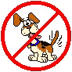
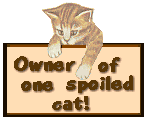
|
  |
Here are all my links to other pages more will be added.
send my friend a e-mail to get a link to her page.
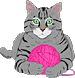
Feel free to send any complaints.
Flames will be used to roast marshmallows 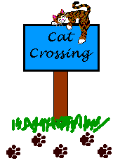
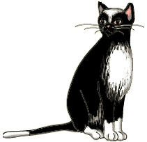
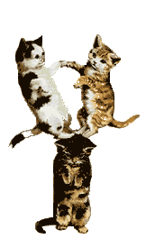 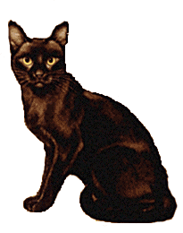
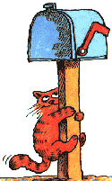
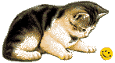
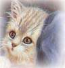
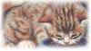
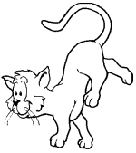
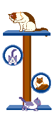
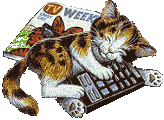
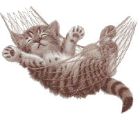
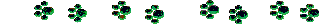